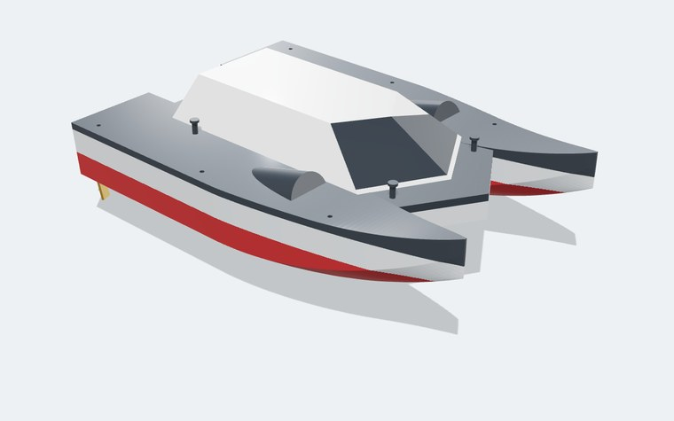
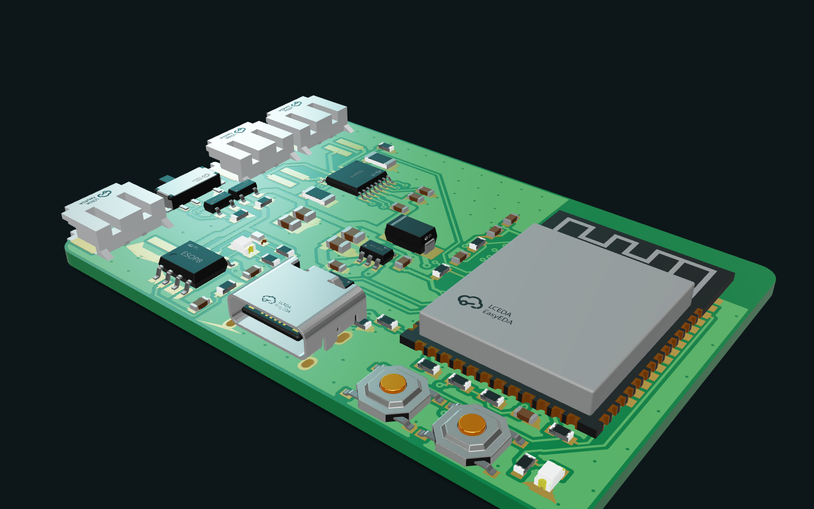

Boat QB12
手柄遥控的 3D 打印双体船：自己画的 ESP32-S3 主控板、脚本生成的船体、固件，配两门网页课。
A gamepad-controlled, 3D-printed RC catamaran with its own board, firmware and two courses (in Chinese).


课程
3D 和动画
3D 预览整船可拖动旋转，船体、甲板、舱罩可以拆开看。2.4 MB
装配动画一步步装电机、尾轴、板子、电池和甲板。12.5 MB
电池接线动画电池裸线焊到插头线上：先量极性，剪短，套热缩管，红对红、黑对黑。
做一艘
打印船体、准备材料 →4 种打印件怎么打、要买哪些电机和小零件（附搜索词）、需要什么工具、先做什么。| 主控板 | Gerber · BOM · 坐标文件 · 原理图 PDF · KiCad 工程 2 层，56 × 38 mm。ESP32 模组要选标准型贴片（经济型不贴）。 |
| 船体 | 船体 · 甲板 · 舱罩 · 旋钮（打 2 个） 光敏树脂打印，打印要求见 打印和材料。 |
| 固件 | firmware/：Xbox 手柄模式和手机 Wi‑Fi 网页模式，编译和烧录见那里的 README。 |
| 源文件 | GitHub 仓库：KiCad 工程、船体脚本、装配检查、课程源码。 |
现状（Rev A）
板子已打样、上电，桌面测试全部通过。第一次下水能跑，但蓝牙不到 10 m 就断，推测是 PCB 天线离水面太近、手柄发射功率小。固件已经加了手机 Wi‑Fi 模式，距离还没实测；Rev B 打算换外接天线的模组。